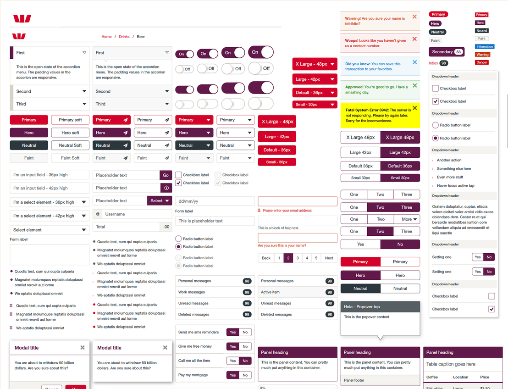
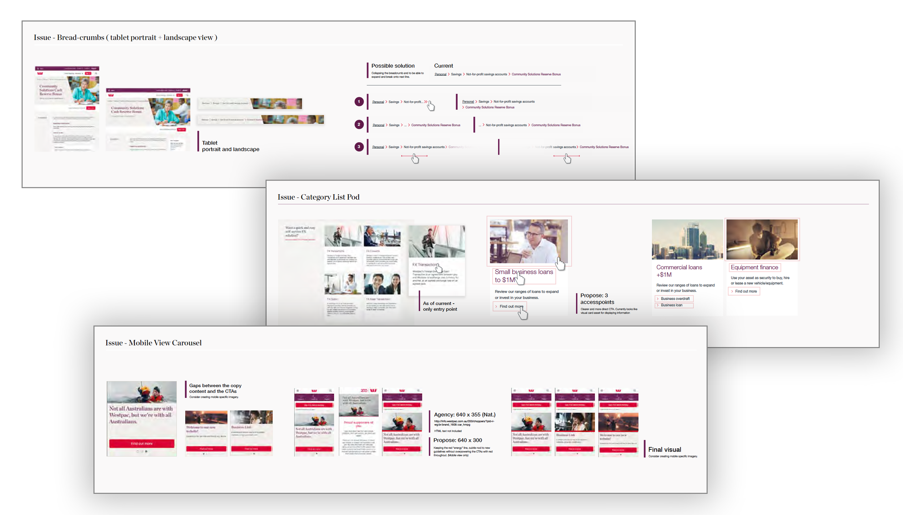
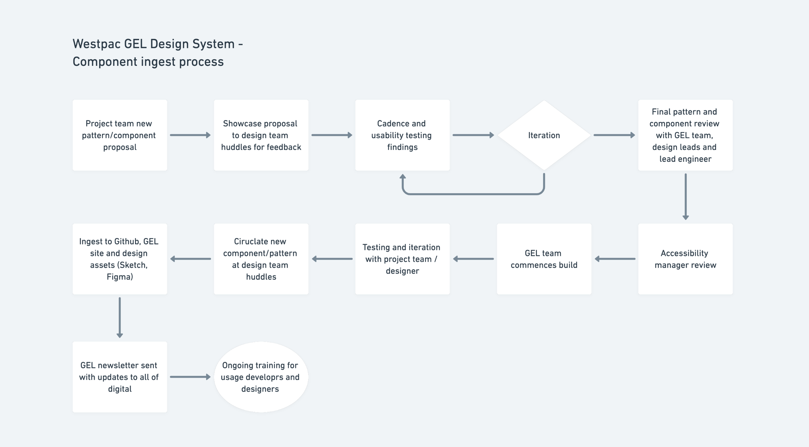

Westpac, one of Australia's largest financial institutions, operates over 100 digital touchpoints, which poses a challenge of inconsistency in their design assets. To address this, the Westpac Design Team aimed to create a design language that is scalable, reusable, user-friendly and consistent throughout the entire organization.
As a outcome, we had developed, constructed, and established governance for our components, making them accessible, understandable, and reusable. This leads to a familiar and user-friendly experience for our customers and provides significant efficiency improvements for our development teams and their stakeholders, allowing for the delivery of consistent, high-quality results and ready-to-code user solutions.

With the introduction of the GUI, there may be instances where components and experiences are inconsistent. It is our responsibility to continuously improve the usability of our extensive collection of components.
To ensure the success of the GEL design system, governance has been thoroughly documented and its usage rules have been established. However, what sets us apart is our commitment to constant improvement. The GEL is not the final solution for the interface, but rather a starting point for teams to experiment and explore new permutations and enhancements that suit their specific needs. We recognize the limitations of a design system that may limit creativity, and therefore encourage our designers to push the boundaries of the Westpac GUI to add to our growing pattern library.

To ensure the components and patterns, both I and the Lead Designer introduced an ingestion process. The aim of this process is to not only ensure the quality of the components and patterns but also to make the process effortless and engaging for teams to contribute, rather than feeling like a burden.
Introducing this process keeps the GEL team accountable but also opens up collaboration with the teams that are delivering within their streams.

“Before GEL I could deliver 1-2 projects per year. With GEL I have delivered 8 projects in a year. And has saved a substantial amount of costs within my stream”
Product OwnerWithin a span of a year, Westpac GEL's assets covered more than 62% of Westpac's currently existing digital touchpoints. Providing consistent journeys for ours customers and paving the way for more efficient delivery of projects for the business